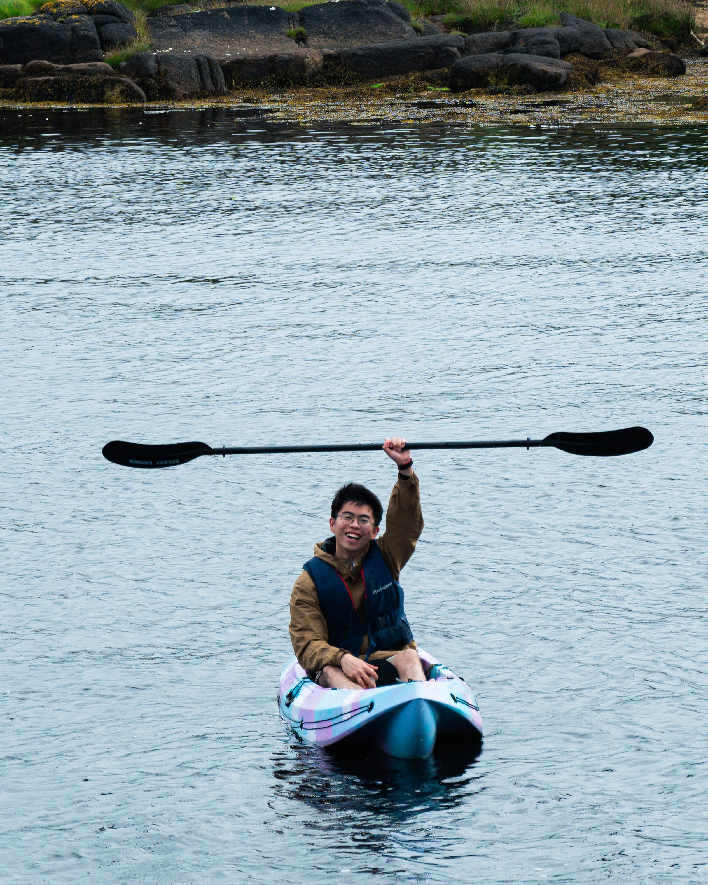
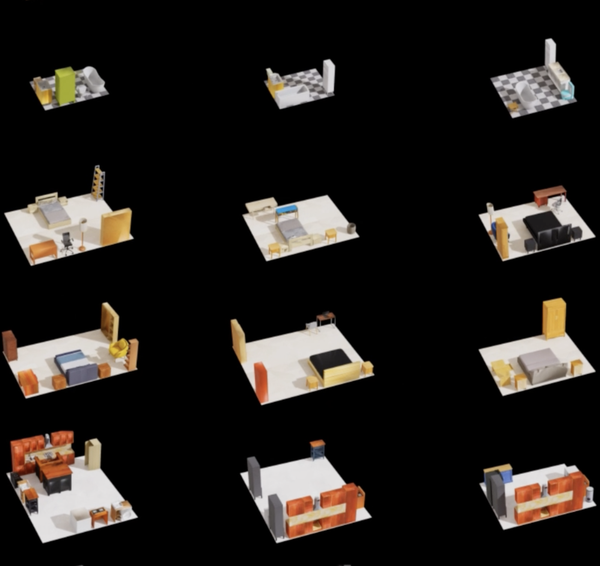
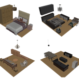
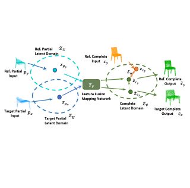
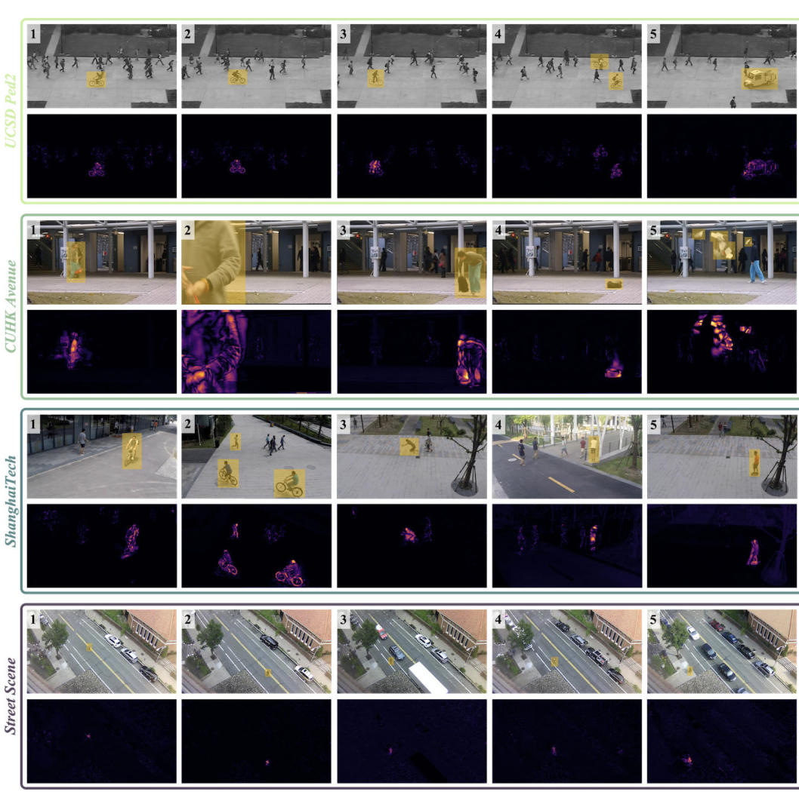

|
Yixuan Yang
Hi there! My name is Yixuan Yang (杨翊玄, pronounced 'Yee-shwen Yang'). I am currently a Ph.D. candidate at DCS, University of Warwick, UK, supervised by Prof. Victor Sanchez and Prof. Feng Zheng (SUSTech, China). I received my Master degree at CSE, The Chinese University of Hong Kong (CUHK) in 2020. Previously, I obtained my Bachelor's degree in the School of Computer Science in 2019 at Northwest University, China. Now, I am an intern at Shanghai AI lab, working on 3D scene generation and 3D reconstruction.
Besides, I am also a photography enthusiast, I share some of my photography works in this page.
Email /
Github /
Photo Gallery
|

|
News
2025.6: One paper about 3D scene generation with LLMs is accepted by IROS 2025!
2025.3: One paper about unpaired point cloud completion is accepted by IEEE TMM!
2024.11: One paper about video anomaly detection is accepted by IEEE TIP!
2024.11: I'm excited to join Shanghai AI Lab as a research intern, focusing on 3D scene generation and reconstruction!
|
Research
My research interests include 3D computer vision, 3D generation and 3D perception. And now I am working on 3D scene generation with LLMs and 3D reconstruction for the transparent and reflective objects.
|
|

|
OptiScene: LLM-driven Indoor Scene Layout Generation via Scaled Human-aligned Data Synthesis and Multi-Stage Preference Optimization
Yixuan Yang*, Zhen Luo*, Tongsheng Ding*, Junru Lu, Jinyu Yang, Mingqi Gao Victor Sanchez, Feng Zheng
* Equal contribution
arxiv
/
project page
We introduce a new large 3D synthetic indoor layout dataset 3D-SynthPlace and introduce LLM-based Optiscene with two-stage DPO to generate new 3D layout scene.
|
|

|
LLplace: The 3D Indoor Scene Layout Generation and Editing via Large Language Model
Yixuan Yang, Junru Lu, Zixiang Zhao, Zhen Luo, Wanxi Dong, Victor Sanchez, Feng Zheng
2025 IEEE International Conference on Intelligent Robots and Systems (IROS 2025)
paper
We use LLMs to generate and edit the 3D indoor scene layout.
|
|

|
RefComp: A Reference-guided Unified Framework for Unpaired Point Cloud Completion
Yixuan Yang, Jinyu Yang, Zixiang Zhao, Victor Sanchez, Feng Zheng
IEEE Transactions on Multimedia (TMM)
paper
We apply the reference-guided generation to guide the unpaired point cloud completion.
|
|

|
Advancing Video Anomaly Detection:
A Bi-Directional Hybrid Framework for Enhanced Single- and Multi-Task Approaches
Guodong Shen, Yuqi Ouyang, Junru Lu, Yixuan Yang, Victor Sanchez
IEEE Transactions on Image Processing (TIP)
paper
We introduce a bi-directional hybrid framework to detect anomaly frames of the video.
|
|
Micropapers
|
Squareplus: A Softplus-Like Algebraic Rectifier
A Convenient Generalization of Schlick's Bias and Gain Functions
Continuously Differentiable Exponential Linear Units
Scholars & Big Models: How Can Academics Adapt?
|
|
Recorded Talks
|
Radiance Fields and the Future of Generative Media, 2025
View Dependent Podcast, 2024
Bay Area Robotics Symposium, 2023
EGSR Keynote, 2021
TUM AI Lecture Series, 2020
Vision & Graphics Seminar at MIT, 2020
|
|
Academic Service
|
Lead Area Chair, ICCV 2025
Lead Area Chair, CVPR 2025
Area Chair, CVPR 2024
Demo Chair, CVPR 2023
Area Chair, CVPR 2022
Area Chair & Award Committee Member, CVPR 2021
Area Chair, CVPR 2019
Area Chair, CVPR 2018
|
|
Teaching
|
Graduate Student Instructor, CS188 Spring 2011
Graduate Student Instructor, CS188 Fall 2010
Figures, "Artificial Intelligence: A Modern Approach", 3rd Edition
|
|